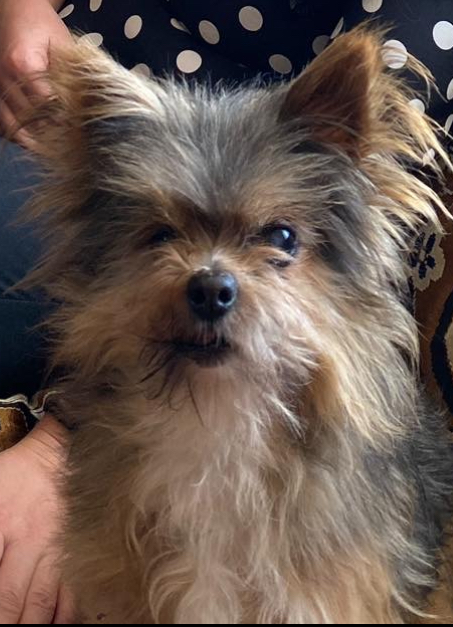

Масік. Моя історія життя 😇
Коротко про мене 🐶:

Привіт Мене звати Масік.😇 Я вже і не пам'ятаю де я народився, але доля мене привела в маленьке селище Петраківка, до найкращої родини в світі.
Моя нова мама, Марина, була ще школяркою, коли я з'явився у їхньому житті.
Вона дуже мене любила і турбувалася про мене, готуючи смачну їжу, яку я з задоволенням їв (окрім сирої їжі, яку я зовсім не любив!).
Я завжди спав у квартирі, бо як можна спати на вулиці, коли є м’які подушки і тепло?
Моя улюблена розвага — це проводити час з родиною, гуляти з Мариною та слухати її розповіді.
Дуже часто ми спали разом в одій кроваті, хоча батьки Марини часто сварились на це, але хто ж буде проти такого задоволення поспати в теплій кроватці?)
Інколи я навіть притулявся до неї, коли вона була сумна, адже я завжди був на висоті, коли потрібно було підняти настрій. У нашій родині я був справжнім королем!
Моя улюблена їжа🍗:
- Сирний омлет — Хоч я й не любив сир, але омлет з маленькими шматочками сиру зводив мене з розуму. Якщо до нього ще додавали трохи курячого бульйону, то я взагалі не міг зупинитися!
- Картопляне пюре з свіжою свининкою — Це страва була просто ідеальною! М'яке пюре і ніжна свининка тільки з під ножа Ко — я завжди був в захваті. Мама знала, як приготувати саме так, щоб я з’їв усе за кілька хвилин.
- Рибний суп з морепродуктами — О, рибний суп! Це було таке задоволення — я сидів поруч і чекав своєї порції. Найкраще було, коли мама додавала шматочки червоної риби, і я міг ковтати їх з насолодою. Стоп, це був мій сон, ех, а так хотілося))
- Холодець — І не можна забути про холодець! Я просто обожнював його! Особливо, коли в ньому було багато м'яса, а сама заливка була така смачна і студена. Кожен раз, коли мама подавала холодець, хоть це було і не часто, я знав, що це буде справжнє свято для мого шлунка! Читай далі, розповім історію про холодець пізніше.
Ці страви були моїми найулюбленішими, і я завжди чекав, коли мене почнуть годувати!
Мої улюблені розваги⚽️:
- Гуляти з Маріною — О, як я любив прогулянки з моєю мамою! Ми часто ходили в парк, і я бігав від дерева до дерева, стрибаючи від радості. Я завжди був першим, хто біжить до нових запахів, і не міг дочекатися, щоб дослідити все навколо. Натисни сюди і ти побачиш як я ми це робили.
- Грати з м’ячиком — М'ячик — це завжди було весело! Я любив бігати за ним, ловити його і приносити назад. Це була одна з моїх улюблених ігор, особливо коли Марина кидала м'ячик далеко, і я мав бігти за ним, навіть якщо на це йшло багато зусиль!
- Погоні за тінями — Це була справжня магія! Я завжди намагався впіймати свою тінь, але, звісно, не міг, і це мене дуже веселило. Я часто ганявся за нею, не розуміючи, чому вона завжди тікає.
- Перевертатися на спину — Як тільки я відчував себе комфортно, я часто перевертався на спину, щоб отримати подушку або пестощі. Мама завжди сміялася, коли я так лежав, і не могла не погладити мене по животу.
- Поспати в улюбленому місці — Моя найбільша розвага — це сон. Я мав своє улюблене місце на дивані, де я міг спати годинами. Тепло, м’яко, і жодних турбот — це було саме те, що мені потрібно для повного щастя! Натисни сюди і ти побачиш як я це робив.
- Їздити з Ко на машині, висунувши язик — Це моє найулюбленіше! Коли ми виїжджали на машині з Ко, я завжди висовував язик і насолоджувався вітерцем! Це була одна з найвеселіших частин моїх поїздок — я відчував, як вітер гладить моє обличчя, а мій язик танцював у повітрі. Це було відчуття свободи!
Ці розваги робили моє життя яскравим і веселим, і я завжди був готовий до нових пригод!!
Веселі історії⚽️:
- Як я став «втікачем — Одного разу То дала мені по жопі полотенцем, і я вирішив, що найкраще місце для сховку — це гараж! Я так заховався серед старих коробок, вважав, що ніхто мене не знайде. Але ось що сталося далі — Ко і То, побачивши, що мене немає вдома, почали панікувати! Вони думали, що я втік з дому, і довго їздили на машині, шукаючи мене по всіх сусідах. Мене це розсмішило, і я з гаража спостерігав за ними! Зрештою, я вирішив «появитися», і вони зрозуміли, що я просто сховався. Але сміху було багато, адже вони думали, що я вирішив покинути «свою сім’ю» через одне полотенце! І, звісно, як тільки вони знайшли мене, покормили мене найсмачнішою їжею, щоб вибачити цей «втечу»! 😄. Натисни сюди і ти побачиш як я виглядав після того як поїв.
- Як я загубився в полі серед високих колосків пшениці — Одного разу Ко і То вирушили зі мною на прогулянку в поле, і я, звісно, не міг втриматися від спокуси побігати серед високих колосків пшениці. Це був справжній лабіринт! Я біг, біг, а потім раптом зупинився... і зрозумів, що не можу знайти шлях назад! Колоски були такі високі, що я не бачив нічого навколо. Моя маленька голівка була повністю захована в цьому золотому океані пшениці, і я почав панікувати! Ко і То, звісно, помітили, що мене немає, і почали мене шукати. Вони кликали мене, а я, розгублений, тільки повертався до кожного звуку, намагаючись знайти їх. Але ж ці колоски так мене «поглинули»! Наприкінці я таки знайшов вихід, і, з'явившись перед ними, виглядав наче справжній шукач скарбів! З того часу я більше не бігаю в такі поля, а то раптом знову загублюсь! 😄. Фото з поля нажаль немає, але тут ти можеш побачити який я гарний принц.
- Як я любив телефонувати Марині по вайберу — Я завжди був дуже комунікабельним, особливо коли справа стосувалася Марини. І ось одного разу Ко або То почали телефонувати з їхнього телефону на телефон Марини через вайбер. І ви не уявляєте, скільки радості це приносило мені! Як тільки я бачив, що вони беруть телефон і дзвонять, я миттєво підбігав, щоб подивитися на екран. Як тільки з'являлася Марина, я починав гавкати до неї через екран, ніби намагався поговорити! Я так любив її бачити на екрані і чути її голос — це завжди було справжнім святом для мене! Марина завжди сміялася, коли чула мої гавкання, а інколи я так активно намагався комунікувати, що інші просто ставили телефон поруч зі мною, і я продовжував гавкати, намагаючись достукатися до неї через вайбер. Це була наша маленька традиція, яка приносила радість і сміх кожного разу, коли я міг "позвонити" Марині! 😄. Як це було, ти можеш побачити тут.
Галерея 🗂️:
Ще декілька моїх фото ти можеш переглянути - тут
Контакт або Гостьова книга 💌:
Я тут створив собі Google форму, і ти можеш мені дешо написати і я обов'язково це прочитаю. У нас тут гарний Wi-FI, не те що в Петраківці. Написати можна сюди
Send Email 17smovzh@gmail.com
Created by Anton Smovzh в честь пам'яті Масюніка ❤️